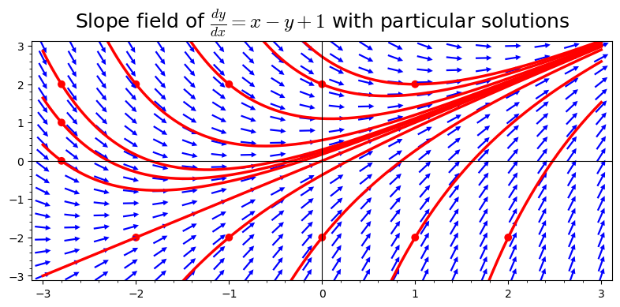

Ordinary Differential Equations Using SageMath
Calculus

SageMath References
Differential Equations Books with SageMath
Introductory Differential Equations Using Sage
, by David Joyner. Free and online textbook with lots of SageMath code integrated into the text.
The Ordinary Differential Equations Project
by Thomas W. Judson. Free and online textbook with lots of SageMath code integrated into the text.
Additional SageMath References
CoCalc website
CoCalc website
. A great place to run your SageMath code and save your work.
Additional SageMath Books and References
Sage for Undergraduates
by Gregory Bard. Download his free book at his website.
Sage Tutorial - Online website
By Mike O'Sullivan.
Your SageMath Computations
Type your own Sage computation below and click “Evaluate”.
Direction and Slope Fields
Plotting Slope Fields
Plotting Slope Fields:
A few customizations to the look:
Solving Differential Equations
Solving Differential Equations
Solving differential equations: General Solution
In the next example, we solve for a few particular solutions:
Plotting Slope Field and Particular Solutions
Things get interesting when we plot both a slope field and a few particular solutions: